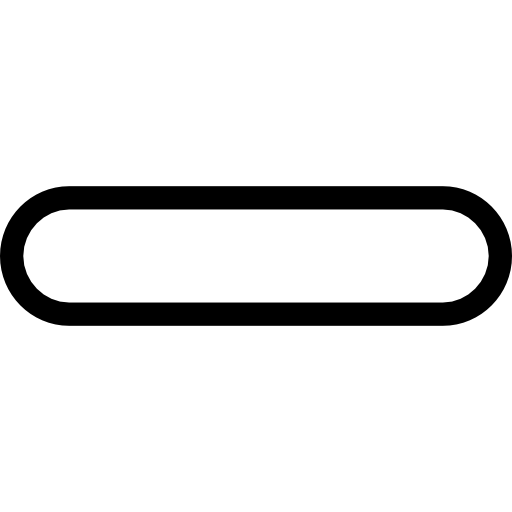

<p *ngIf="isLastPicture()">
    <a href="http://platform.ansyn.io:81/#/">
        
    </a>
</p>

<div *ngIf="!isLastPicture()" class="left" (click)="nextImage()">
    
</div>
<div *ngIf="!isFirstPicture()" class="right" (click)="previousImage()">
    
</div>
<div *ngIf="!isLastPicture()" class="skip" (click)="skip()">
    
    <span>דלג לסוף</span>
</div>

<div class="slider">
    
    

    
    

    
    
</div>